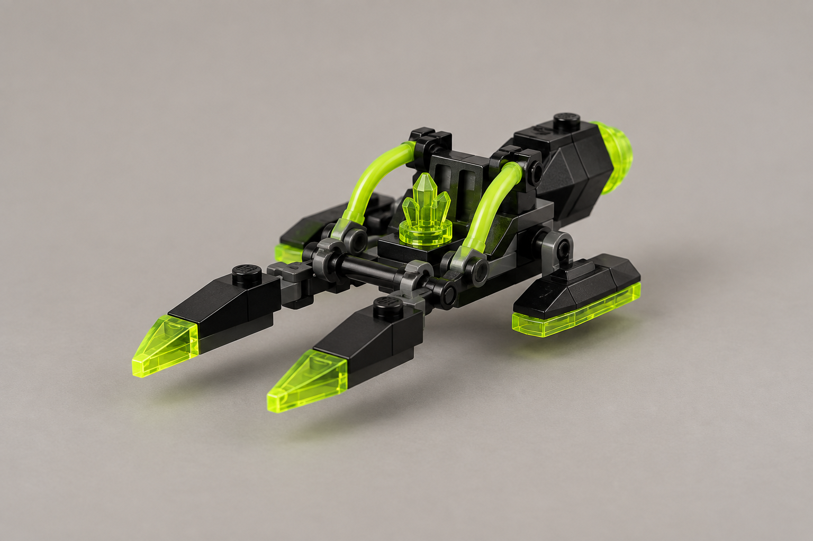

Production Design Target
Обраний напрям 3 · візуальна пропозиція
Візуальна ціль нового силуету. Згенероване зображення не підтверджує реальні назви деталей чи фізичні з’єднання.
Прибульці · легкий наземний hover-атакувач проти легких цілей і робітників
Alien Jet — повітряний юніт; тут — відкритий низький скутер без кабіни.

Візуальна ціль нового силуету. Згенероване зображення не підтверджує реальні назви деталей чи фізичні з’єднання.
unit.aliens.razor_skimmer.